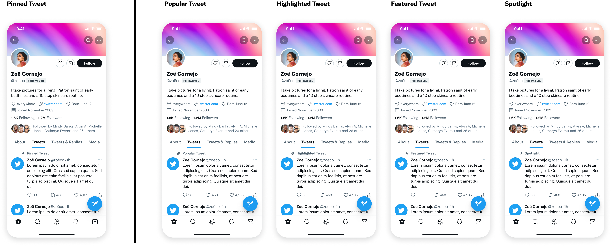
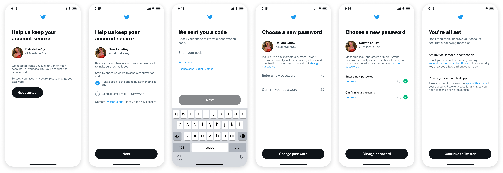
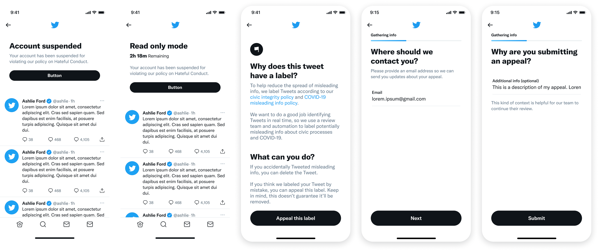
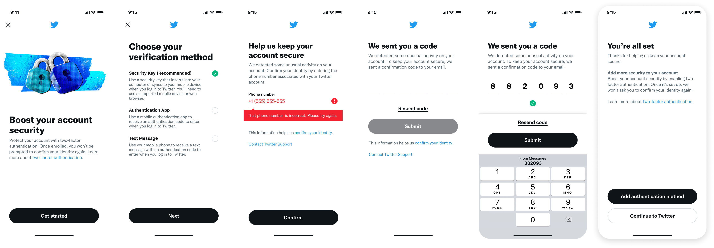

Twitter samples
Background
I previously worked at Twitter as a Lead Content Design Manager in the Health organization (aka Trust and Safety). I unfortunately can't upload more detailed case studies due to ongoing challenges and NDAs surrounding the company, but you can still see a selection of screens from a few projects below.
Popular Tweet
Internal research showed that seeing a Pinned Tweet kept users engaged and helped motivate them to follow a new account. With this in mind, our team hypothesized that automatically adding a user's most successful Tweet to the top of their profile might recreate this phenomenon.
As part of this experiment, I was tasked with naming this feature. You can see some explorations below:

While we initially considered several other variations (e.g. “Top Tweet,” “Most Famous Tweet,” etc.), we wanted to make sure that there would be no iteration that resulted in Twitter naming a hateful or inappropriate Tweet as a good Tweet.
Password reset flow
We redesigned the password reset flow in Twitter to be more secure and utilize a modern component library. In turn, this also allowed for more accurate data collection.

Appeals flow
Initially, the suspension appeals flow on Twitter existed only on the web. As part of our improvements to the Actor and Reporter experience on the platform, we created a new in-app flow to support users while also providing transparent and direct communication.

Additional screens
In addition to the above, here are some screens focused on user challenges and remediations, two-factor authentication, and reactivating your account.
